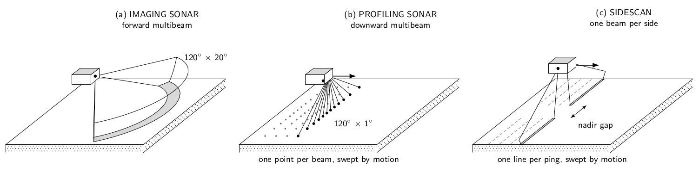
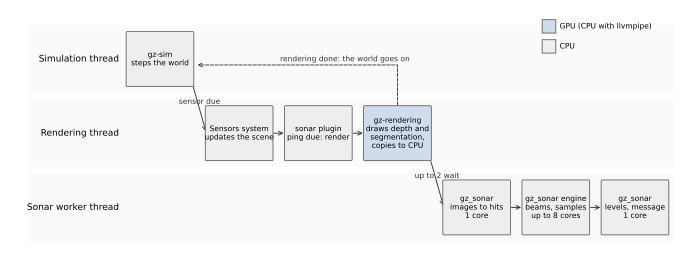

Sonar simulation design
Status: implemented, under review, 2026-11-22.
Use cases
The sonar simulation exists so that a team can develop underwater perception and mapping in simulation and run the same pipeline on the real vehicle. The driving case is the Virtual RobotX 2027 competition, but the needs are generic to small marine robots working in shallow harbor water:
Detect and classify objects underwater, from a strong, simple target (a hollow sphere) up to lookalike shapes, low-contrast objects and clutter near structures, including when the camera cannot see.
Measure the range and bearing to a nearby object precisely enough to report its position in the world.
Decide whether a space (a dock bay, a route) is clear of submerged obstructions.
Survey an area and produce a georeferenced map product of the seabed and an object on it, such as a shipwreck, from a surface vehicle, an underwater vehicle, or both. For development, the map product is a georeferenced point cloud that fuses sonar data with the vehicle’s positioning, and it is scored by its geometric difference from the simulation’s ground truth.
The water is shallow: nominally 3 to 12 m, at most 30 m.
The simulation is used for scored competition runs as well as development, so it must be repeatable from a seed, run on the evaluation hardware alongside several vehicles, and expose difficulty through a small set of documented parameters. The scoring hardware has a GPU, and the sonar must hold its configured rate there; it must also run, more slowly, on any machine that can run Gazebo’s cameras, so that no team needs a GPU to develop.

Three types of sonar: the same engine, with different geometry.
Sonars in scope
Sonar |
Where |
Use cases |
Exemplar |
Native product of the exemplar |
|---|---|---|---|---|
Imaging sonar (forward-looking multibeam) |
UUV, looking forward |
1, 2, 3 |
Sonoptix ECHO (defaults): 400 kHz to 100 m or 700 kHz to 30 m, 256 beams over 90° or 120°, 20° vertical, up to 25 Hz. Also, for example, Teledyne BlueView M900-130 Mk2: 900 kHz, 130°, to 100 m |
uint8 matrix, one column per beam and one row per range sample |
Profiling sonar (downward multibeam) |
UUV looking down, or USV |
4 |
Cerulean Surveyor 240-16 (defaults): 240 kHz, angle of arrival, 4° along track by 80° across, 10 to 20 soundings per ping, up to 100 m, up to 20 Hz. Also, for example, a beamformed profiler such as the Teledyne Odom MB2: 200 to 460 kHz, 1.8° by 1.8° beams |
Soundings: a range and an angle per detection, sometimes with water-column intensity |
Sidescan |
USV, one bar under the hull with a transducer on each side |
4 |
Cerulean Omniscan 450 SS: 450 kHz, 0.5° along track by 50° vertical, up to 150 m, up to 20 Hz |
One line per ping: 200 to 1200 uint16 samples in dB, with range start, length, gain and sound speed |
A UUV carries a sonar looking forward, one looking down, or both; the BlueROV2’s chassis has one sonar slot, for the Ping360, so these sonars go on by free placement. A USV carries the sidescan, the profiling sonar, or both.
Out of scope: single-beam echosounders and altimeters, interferometric sidescan, synthetic aperture sonar, sub-bottom profilers, mechanically scanned sonars (imaging or profiling), 3D sonars with a two-dimensional receive array, acoustic positioning (USBL, LBL) and acoustic communication, which is a separate design.
The three sonars differ in where they point and how wide the beam is in elevation, not in the underlying physics. An imaging sonar has a beam wide in elevation: every pixel sums echoes from a tall wedge of water, so the image shows the scene’s appearance (highlights, shadows) but loses each return’s elevation. A profiling sonar has a beam narrow in elevation, so each beam’s strongest return fixes a point in 3D, and the vehicle’s motion sweeps the profile into bathymetry. A sidescan is a single fan-shaped beam per side, swept along the track by the vehicle’s motion.
Glossary
How this project uses the terms. The field uses several of them loosely, so the synonyms column says what else a reader may meet and what we avoid.
Term |
How we use it |
Synonyms and terms we avoid |
|---|---|---|
Multibeam sonar |
A sonar whose array forms many beams at once, side by side across a fan. In this project a multibeam sonar is either an imaging sonar or a profiling sonar. |
“Multibeam” alone means a profiling sonar to hydrographers and often an imaging sonar in robotics papers; we always say which. |
Imaging sonar |
A multibeam sonar whose beams are wide in elevation. Its product is an intensity image in range and bearing; the elevation of each return is lost. |
Forward-looking sonar (FLS), multibeam imaging sonar, 2D sonar, acoustic camera (usually for the highest-frequency units). We avoid FLS as a type name, because it names the pointing direction: a profiler or a 3D sonar can also look forward. |
Profiling sonar |
A multibeam sonar that ensonifies a thin fan, narrow along track and wide across it. Inside the device it has the echo intensity of the fan in angle and range, a thin-slice image of the scene; it detects the bottom in it, rejects outliers, and delivers soundings: a range and an angle per detection. Motion sweeps the profiles into bathymetry. |
Multibeam echosounder (MBES), bathymetric multibeam, swath sonar, multibeam profiler. Water column is the name for the intensity before detection, when a device exposes it. Not a sub-bottom profiler, which images layers beneath the seabed. |
Sidescan sonar |
One beam per side, narrow along track and wide in elevation, pointing sideways. Each ping gives one intensity line per side; motion along the track builds the image. |
Side-scan, side scan, SSS. It is not a multibeam sonar in this project. |
Ping |
One transmission and the echoes received from it. |
Shot, frame (for an imaging sonar’s image). |
Beam |
One direction the sonar resolves within a ping. |
Channel (in some vendor formats). |
Sample |
One time step of a beam’s received echo, which corresponds to one range, at 2R/c. |
Range bin, bin, row (in the ECHO’s matrix). |
Azimuth, elevation |
The angles across a fan and out of it: for an imaging sonar, horizontal and vertical; for a sidescan, along track and across the swath. |
Horizontal and vertical field of view (FOV), beam width and beam height (Cerulean). |
Beam width |
The angle between the −3 dB points of a beam’s two-way response. |
Beam angle, opening angle. |
Incidence angle, grazing angle |
The angle between the ray and the surface normal (incidence), or between the ray and the surface itself (grazing). They add to 90°. |
Angle of incidence. Seabed backscatter is usually quoted against grazing angle. |
Waterfall, mosaic |
A waterfall stacks sidescan lines in ping order, in the sonar’s own frame. A mosaic places them in the world from the vehicle’s position and heading. |
Sidescan image, georeferenced image. |
Theory of operation
The engine is an incoherent sonar-equation model on rendered geometry: Gazebo renders the surfaces the sonar sees, and the sonar equation turns each into echo power, added without phase.
For each beam and range sample the echo power from every surface patch the beam sees is summed, using the sonar equation: two-way spherical spreading, Francois–Garrison absorption, the patch’s backscatter strength times the area the beam ensonifies, and the two-way beam pattern. Backscatter follows Lambert’s law (μ cos² of the incidence angle) plus a Gaussian specular lobe near normal incidence. Phases are never computed, so the model is incoherent: the interference between scatterers is applied afterward as speckle, an exponentially distributed multiplier on intensity.
This section describes, at a high level, the model component by component, with references for the details; places it among the alternative approaches; justifies why it suits the driving use cases; and then describes how the one model is adapted to the different sonar types: the multibeam sonars (imaging and profiling) and the sidescan.
The model and its components
All three sonars use this one engine, also called an incoherent intensity model. It treats every surface the sonar sees as a patch made of many small, independent scatterers, and its result is the echo intensity in every beam and range sample, which is then turned into what the real device delivers: the message the sonar plugin publishes (see Output, below). Coiras and Groen, “Simulation and 3D reconstruction of side-looking sonar images” (in Advances in Sonar Technology, 2009, open access), derive this model in “Sonar simulation”: from the wave equation and point scattering down to the Lambertian, incoherent form used here. Sena and Santos Neto, “SideScanSim: an open-source side-scan sonar simulator” (2026, with an open implementation), write out the same ingredients in a few lines each: the sonar equation with spreading and Francois–Garrison absorption, Lambert’s law for the seabed, time-varied gain, and speckle as an exponentially distributed intensity. Short introduction to the “SONAR equation”.
The engine follows the terms of the active sonar equation, received level = source level − 2 TL + BS + 10 log A, weighted by the beam pattern, in six components:
Component |
Sonar-equation term |
What we model |
|---|---|---|
Geometry |
Which surfaces the sonar sees, at what range and incidence |
Rays sampled from depth and segmentation cameras; the first hit only, which gives shadows |
Transmission loss |
2 TL |
Straight paths, one sound speed, two-way spherical spreading and Francois–Garrison absorption |
Backscatter |
BS + 10 log A |
Lambert’s law plus a specular lobe, per surface, times the area each ray covers |
Sonar |
Source level, directivity and range resolution |
The two-way beam pattern with its sidelobes and vertical taper, the beams, the pulse length and range samples |
Fluctuations |
The statistics of the received level |
Speckle as an exponentially distributed multiplier, and a noise floor |
Output |
What the sonar plugin publishes, as the device would |
Time-varied gain and gain, then 8-bit or dB levels in a |
The contribution of a ray hitting a surface at range R and incidence θ is proportional to b²(φ, ψ) · σ(θ) · A / R⁴ · 10^(−2αR/10), where b is the one-way beam pattern at the ray’s azimuth φ and elevation ψ, A = R² ΔΩ / cos θ is the area the ray’s solid angle ΔΩ covers on the surface, and α is the absorption in dB per meter. The source level is a constant, which the gain applied before the levels are published absorbs.
flowchart LR
G["Geometry<br/><i>range, incidence, label per ray</i>"] --> E["Transmission loss and backscatter<br/><i>echo level per ray</i>"]
E --> B["Sonar<br/><i>beam pattern, pulse length, binning</i>"]
B --> S["Fluctuations<br/><i>speckle and noise, seeded</i>"]
S --> R["Output<br/><i>TVG, gain, dB, 8-bit; or detect range</i>"]
Geometry
For each ping, a fan of rays covers the sonar’s field of view at finer resolution than the beams, in azimuth and in elevation. In elevation the rays reach past the beam’s −3 dB edge, to elevation_span half-widths of the vertical beam (three for the imaging sonar, where the pattern is 27 dB down), so the seabed shows faintly before the main beam reaches it, as on a real sonar; the fan then stops, a sampling limit rather than physics. Each ray returns the range to the first surface it hits, the incidence angle there, and the acoustic properties of that surface. Taking only the first hit along each ray produces acoustic shadows without any extra step. In Gazebo the rays come from gz-rendering: a depth camera gives the range, read at each ray’s exact direction by interpolating 1/z between pixels, which is exact on a plane, also one seen at a grazing angle, where depth changes fast from pixel to pixel but 1/z stays affine; a seabed that is not quite a plane (a mesh’s creases, an undulation) is read the same way, as long as 1/z bends by less than half its change from one pixel to the next; at a step or a silhouette, where it bends by as much as it changes, the nearest pixel is kept instead; a segmentation camera gives the entity hit; and normals come from neighboring hits on the ray grid that are on the same surface: with the same label, and with a jump in range no larger than a surface at 45° incidence would give across the angle between the two rays, or a larger jump that a third ray carries on, 1/range changing by about as much again to the next ray along the grid, as it does on a plane at any grazing angle and does not past the edge of a plate with a wall behind it; a hit whose normal cannot be estimated, on an object one ray wide, is given an incidence of 45°, a plain diffuse return with no glint, rather than the strongest return head on. This was measured at 0.02 mm median range error on a box on a seabed; gz-rendering’s ray sensor (GpuRays) was rejected for an error floor of about 8 mm and no normals. Reading between pixels has two limits: detail finer than a pixel, such as ripples shorter than the stretch of seabed one pixel covers, is not in the depth image at all; and steps that repeat about one pixel row apart, such as stairs seen at a grazing angle, read as a ramp, which puts some rays in open water above a tread. Depth cameras report depth along their optical axis, which the sampler converts to range along the ray.
Transmission loss
Two-way spherical spreading, 1/R⁴ in intensity (40 log R in dB), and absorption over the two-way path. Absorption comes from the Francois–Garrison equations at the configured frequency, temperature and salinity, at the surface, not from a fixed constant. The shallow, near-isovelocity water lets the engine ignore refraction and propagation modeling: paths are straight, and sound speed is a single configured value. Multipath, the bounces off the surface and the seabed that matter for a sidescan in shallow water, is not modeled yet; the water surface is hidden from the sonar.
Backscatter
The backscatter is σ(θ) = μ cos²θ + R²/(8πw²) · exp(−θ²/2w²): Lambert’s law for rough, diffuse scattering, per unit area (μ times the square of the sine of the grazing angle), with μ a property of the surface, plus an optional Gaussian specular lobe of angular width w for smooth objects, which return strongly only near normal incidence. The lobe is the Kirchhoff approximation near normal incidence for facet slopes of rms w, so its strength is set by R², the square of the reflection coefficient at normal incidence, and the 1/(8πw²) makes it carry the energy of a mirror: a sphere of radius a returns R² a²/4, the target strength of a rigid sphere when R² = 1, whatever the width. A wider lobe shows the glint over more viewing angles at a lower peak. μ is the backscattering cross section per unit area and per unit solid angle at normal incidence, and 10 log₁₀ μ is the backscattering strength the literature tabulates (APL-UW TR 9407 (1994; approved for public release in 1997), Section IV.C.2, Eq. 34, p. IV-22). The law is the acoustic form of Lambertian reflectance, which in optics has a single cosine. The square comes from the two legs of a monostatic sonar: a tilted patch both intercepts less of the beam and scatters less of it back. Because the engine multiplies σ by the area each ray covers, which grows as 1/cosθ, one ray’s return falls as cosθ, the same curve as the optical cosine shading many simulators apply per hit. What the sonar equation adds is the scale: μ is a measured backscatter strength, so the seabed values in the literature apply directly, and summing over area makes a return follow the area the beam ensonifies. Lambert’s law is the standard first-order law for diffuse seabed backscatter, with one parameter (Mackenzie measured μ ≈ −27 dB), and fits at intermediate grazing angles; near normal incidence the specular lobe takes over, and at very low grazing angles real seabeds depart from it. A richer law, such as the APL-UW models, would drop into the same place. Each surface’s values come from SDF, as described in Acoustic properties of the scene.
Sonar
Each ray’s contribution is added (not averaged) into the beams according to the beam pattern, so sidelobes appear around bright targets, and into the range sample at 2R/c, spread uniformly over the wider of the pulse length and the range interval the ray’s footprint covers on a slanted surface. The sampler measures that interval from the ranges the ray’s neighbors on the grid hit on the same surface, by the same test as for normals: on a plane seen at any grazing angle the footprints meet as far as the ray spacing lets them, and at the edge of a target, where the neighbor misses it or hits something farther back, even another part of the same model, the footprint stays small instead of smearing the target in range. Without neighbors the engine estimates it from the incidence angle, capped at 8 samples. Summing over the elevation of a beam reproduces the imaging sonar’s elevation ambiguity; for the narrow beams of the profiler and the narrow along-track width of the sidescan it collapses to almost nothing.
Fluctuations
A noise floor is added to each sample’s intensity as a received level, the receiver’s ambient and electronic noise, and the sum is multiplied by one exponentially distributed random factor, the statistics of fully developed speckle from many unresolved scatterers: echo and noise add as one Gaussian field, so where they are equal the contrast stays at 1, where two independent draws would give 0.71. The noise enters before the time-varied gain and the gain, as in a real receiver, so in the published levels it rises with range as the time-varied gain does, and an echo that spreading and absorption have weakened below it is lost: range, frequency and salinity limit what the sonar sees. Every random draw comes from a generator seeded from the sonar system’s <seed>, the sensor’s name and the ping number, so a run is reproducible.
Output
What a real device delivers differs by sonar, so what the sonar plugin publishes does too (in the SonarImage and SonarDetections messages under Messages): an 8-bit image for the imaging sonar, a line in dB for the sidescan, and soundings for the profiling sonar.
Acoustic properties of the scene
Each surface needs the two backscatter terms above: the Lambert strength μ and, for smooth objects, the specular strength R² and width w. Materials of a mesh part live in its .glb, and the SDF <visual> of a .glb must not declare a <material>, so acoustic properties cannot come from SDF materials; the simple targets in gz_sonar, primitives with no mesh, keep an SDF material for their color. They are set with gz: attributes on the <visual> or <model>, the way the project already marks collisions for buoyancy and wind. Strengths are in dB (10 log₁₀ μ and 10 log₁₀ R²), the form backscatter is quoted in the literature, and the width is in radians, as SDF gives every angle. Ground truth labels come from the same pass: each ray knows which entity it hit. Labels are the segmentation camera’s 8 bits, one id per model and property set for the whole world, so a world can tell 254 surfaces apart; past that, the rest share one id with the default properties, and labeling per ping by range is the way beyond it.
Nothing has to be marked for the sonar to see it. Every surface gets values from the first of these that sets them:
Elements on the visual the ray hit.
Elements directly under its model, which apply to all of the model’s visuals, so a model of many parts is marked once.
The world’s
<default>in the sonar system.The built-in default: −20 dB Lambert, no specular term.
So an unmarked model is a plain diffuse scatterer, and marking is only needed for the objects a task depends on: targets, lookalikes, the wreck. The specular term is never on by default, because a glint on every flat face would make everything look smooth.
The seabed is named in the world rather than marked, because site worlds take their terrain from Fuel models that we do not edit: the sonar system’s <seabed> lists the seabed models and their values. Three kinds of surface return no echo at all: the water surface drawn by gz_waves_rendering, which the engine hides from its cameras; the model that carries the sonar, so a hull or mount never echoes into its own sensor; and anything marked gz:acoustic_transparent="true", for visual-only objects such as markers above the water.
<!-- A hollow glass float: smooth, so weak diffuse scattering and a strong
specular glint when the sonar looks at it head on. -->
<visual name="float" gz:acoustic_lambert="-30" gz:acoustic_specular="-3"
gz:acoustic_specular_width="0.07">
<geometry><sphere><radius>0.2</radius></sphere></geometry>
</visual>
<!-- A course marker that is only for the cameras. -->
<visual name="flag" gz:acoustic_transparent="true">
...
</visual>
<!-- In the world: the water, the seabed, and the default for anything unmarked. -->
<plugin filename="gz-maritime-sonar-system" name="gz::sim::maritime::Sonar">
<temperature>29</temperature>
<salinity>30</salinity>
<seabed>
<model>marina_bay</model>
<lambert>-27</lambert>
</seabed>
<default><lambert>-20</lambert></default>
</plugin>
The values are illustrative, not calibrated. The shipped worlds use −27 dB for their sandy seabeds, Mackenzie’s figure, which is darker than the APL-UW handbook’s sand (below).
The full set of acoustic properties, with a sense of scale for each. The figures are order-of-magnitude guides for choosing values, to be checked against the cited sources before anything is calibrated.
On a visual, or directly under a model:
gz:acoustic_lambert: diffuse backscatter strength, 10 log₁₀ μ, in dB. Lambert-equivalent values for the generic bottom types of APL-UW TR 9407 (1994; approved for public release in 1997) (Table 3, pp. IV-23 to IV-25, and Figure 2, p. IV-26), read at 30 kHz and 20° grazing: about +1 dB for rough rock, −6 for rock, −10 for cobble, −13 for sandy gravel, −18 to −19 for sand and −23 to −28 for silt. The handbook covers 10 to 100 kHz, below these sonars’ 240 to 700 kHz, where its values run a few dB stronger, so applying them here is an extrapolation. The built-in default for objects is −20 dB.gz:acoustic_specular: strength of the glint near normal incidence, 10 log₁₀ R², in dB, with R the reflection coefficient at normal incidence, which the impedance contrast between water and the surface sets (APL-UW TR 9407, Eq. 37, p. IV-27). From about −20 dB, a faint glint off a rough surface, to around 0 dB for smooth, hard surfaces such as glass, metal plate or concrete; at 0 dB a sphere has the target strength of a rigid one, so the 0.2 m glass float at −3 dB is about −23 dB. Off unless set.gz:acoustic_specular_width: angular width of that glint, in radians (Jackson and Richardson, High-Frequency Seafloor Acoustics). From 0.02 to 0.03 (1 to 2°) for very smooth surfaces to 0.17 to 0.35 (10 to 20°) for rough ones; about 0.07 (4°) suits most man-made objects.gz:acoustic_transparent: the sonar does not see this surface.trueorfalse.
In the world’s sonar system:
<seabed>: the seabed models and their Lambert and specular values, on the same scale as above.<default>: values for any surface not otherwise set. Same scale asgz:acoustic_lambert; −20 dB if the world sets nothing.<temperature>,<salinity>: water properties that set absorption at each sonar’s frequency (Francois and Garrison 1982; MB-System mbabsorption). Temperature from 0 to 30 °C, with Singapore harbor water around 29 to 30 °C; salinity from 0 PSU (fresh) to 35 PSU (open ocean), with harbors and estuaries often 20 to 32 PSU. The resulting absorption, at 10 °C and 35 PSU, is roughly 0.03 dB/m at 100 kHz, 0.1 dB/m at 450 kHz and 0.3 dB/m at 900 kHz, rising steeply above 1 MHz.<seed>: where every sonar’s random draws start, mixed with each sensor’s name and the ping number, so two sonars in one world draw differently and a run repeats. An integer; 0 by default, which is a seed like any other.<sound_speed>: one value for the whole water column, which sets range from travel time (speed of sound in seawater). From about 1400 m/s (cold fresh water) to 1550 m/s (warm salt water); 1500 m/s is the nominal value, and warm tropical harbor water is around 1540 m/s. It is set on its own, not derived from the temperature and salinity, which set only absorption; a world that wants the two to agree sets the value they give.
Where it sits among the alternatives
The alternatives, from least to most physical, and so from least to most computation. Neither acousticians nor roboticists share one set of names for them, and robotics papers call the second, third and fourth all “physics-based”, so we name each by what it computes and list the other names a reader will meet.
Model |
Also called |
What it does |
Examples |
Why not here |
|---|---|---|---|---|
Image-based conversion |
Depth-camera based, image processing |
Renders the scene with a camera, as depth or normals, and converts the picture into a sonar fan |
The depth-camera sonar of UUV Simulator and DAVE, UWSim, ACOUSIM (Basha S and Nambiar 2026) |
Intensities are not physical and often normalized away, and the output carries no geometry; classification cues are not trustworthy |
Geometric model with Lambertian shading |
Ray tracing or ray casting, rasterization, octree projection, tube tracing; geometry-driven (Attia et al. 2026) |
Finds range, bearing and shadows from the geometry, by casting rays or rasterizing, and shades each hit with a cosine law |
HoloOcean (octree projection in Potokar et al. 2022, ray casting in HoloOcean 2.0), OceanSim (GPU ray tracing, Song et al. 2025), Stonefish, MARUS |
Range, bearing and shadows are right, but brightness does not follow the area seen, absorption or the beam pattern, which is where the harder detection and classification levels live |
Sonar-equation model |
Incoherent intensity model; energy based (Guériot and Sintes 2011) |
As described above |
This design; SideScanSim |
|
Coherent point-scattering model |
Point-based scattering model (Brown et al. 2017), point scatterer approach, time-series model; for large targets, facets with the Kirchhoff approximation |
Gives each scatterer a complex amplitude and sums the waves in each beam, so speckle and sidelobes emerge from interference |
DAVE, now POSIM (Choi et al. 2021); Penn State’s PoSSM |
Heavier, usually needing a GPU toolkit, and the phase it computes is never seen by a team, which receives beamformed intensity |
Propagation-model driven |
Acoustic propagation models (ray tracing such as Bellhop, normal modes, parabolic equation); the nearby established term, sonar performance model, predicts detection rather than images |
Adds sound-speed refraction, multipath and reverberation from ocean acoustic propagation models |
APL-UW’s Sonar Simulation Toolset (TR 0702) |
Built for sonar design, not for real-time robotics, and unnecessary in water no deeper than 30 m |
The backscatter law is a separate choice from the model: Lambert’s law, the Kirchhoff approximation, small-roughness perturbation, or the APL-UW models, any of which the second to fourth models can use. Ours, and why we chose it, is under Backscatter in The model and its components.
We use POSIM, the continuation of DAVE’s multibeam model (Choi et al. 2021), as the principal constraint and comparison for this design: the reference one level up. It samples the scene the same way, with a depth camera, and adds what our model approximates: the phase of each echo, so speckle and sidelobes come out of interference instead of being applied statistically. Our images were compared with POSIM’s on the same scenes. That is one simulation against another, both approximations, so POSIM is not taken as truth and does not over-constrain the design. Agreement, as on target ranges, bearings and shadows, says the incoherent approximation is enough for the driving use cases. A difference should trace to a known difference between the models, such as our tapered vertical beam against its hard ±10° edge, our per-surface backscatter against its single reflectivity, or our shaded sidelobes against its beam pattern; where it traces to a deliberate choice of ours, we keep the choice rather than match POSIM. Its backscatter is simpler than ours, the same Lambert form with one reflectivity for every surface and no specular term, so the comparison checks how the image is formed, not the backscatter.
Why this level suits the use cases
In the driving use cases, perception consumes what a real sonar delivers after beamforming, and mapping consumes soundings. The simulation produces exactly those data artifacts: for the imaging sonar, a matrix of 8-bit intensities with one column per beam and one row per range sample, which a viewer draws as a fan-shaped image; for the sidescan, one line of intensities in dB per ping, which the consumer stacks into a waterfall and georeferences into a mosaic; and for the profiling sonar, soundings, a travel time and an angle per detection, which the consumer turns into a point cloud. This level matches the focus of the challenge, which is classification and shared autonomy, not beamforming and signal processing.
Imaging sonar
Configured as a fan of N beams over the horizontal field of view, wide in elevation, pointing forward with a configurable tilt. The sonar plugin publishes an 8-bit image in a SonarImage message, made by applying time-varied gain for spreading and absorption, tvg_spreading·log₁₀R + 2αR in dB (30 log R by default), then the gain, which sets full scale (fixed by default), then a fixed mapping of the top dynamic_range dB below full scale (60 by default) onto 1 to 255, linear in dB, with 0 for anything weaker, giving the device’s 8-bit beam × sample matrix. The gain is fixed by default, so a target’s brightness is the same in every frame and from one run to the next, the absolute level that classification needs; auto sets it from each frame’s own median and peak echo, which is easier to look at but is the per-frame normalization held against OceanSim above, and the gain each frame used is in the gz-transport message but not in the ROS one. Thresholding and color maps, which the ECHO’s own viewer applies with its dark point, white point and color map settings, are display choices left to the consumer. The configuration covers wide-fan imaging sonars such as the Sonoptix ECHO and the Teledyne BlueView M900-130 Mk2 (900 kHz, 130°, to 100 m); we use the ECHO for defaults: 256 beams over 120° at 700 kHz, 20° vertical, a 10 µs pulse (7.5 mm in range), and 1024 samples over the range window, set with samples.
Profiling sonar
A real profiling sonar works in three stages: it ensonifies a thin fan, forms the echo intensity across the fan in angle and range, then detects the bottom and rejects outliers on the device, delivering soundings. The simulation follows the same stages.
The engine runs exactly as for the imaging sonar, configured as a fan that is narrow along track (a few degrees) and wide across track, pointing down. It produces the intensity matrix of the thin slice, beam by range sample.
Bottom detection in that matrix gives the soundings the sonar plugin publishes in a
SonarDetectionsmessage, each an angle, a two-way travel time, an intensity and a flag. Beamformed detection takes, per beam, the strongest return above a threshold and flags returns inconsistent with their neighbors; angle-of-arrival detection keeps the strongest echo in each ofmax_soundingssectors of the fan. Both add range noise that grows as the signal-to-noise ratio falls. Where nothing exceeds the threshold, as at grazing angles and over weak surfaces, the beam drops out.The soundings are published, a two-way travel time and an angle per detection. Optionally the intensity matrix from step 1 is published as well, as water-column data, so a team can write its own bottom detection; it is on by default only if the exemplar exposes it.
Devices differ in how they get the angle, and the simulation covers both. A beamformed profiler reports one sounding per beam at fixed beam angles. An angle-of-arrival profiler, such as the Cerulean Surveyor 240-16, transmits one thin fan (4° by 80°), estimates the direction of the strongest echoes from a small receive array (16 elements), and reports a variable number of soundings per ping (10 to 20), each with its own angle; the device reports no intensity, and the simulation fills in the detected level. For the second kind, the simulation keeps the strongest detection in each of N sectors across the fan, with angle noise. Neither kind needs phase in the simulation, because only the soundings leave the device.
The bathymetric work that a large-ocean multibeam needs (sound-speed ray tracing, multi-sector timing) is unnecessary at 30 m or less. We use the Surveyor 240-16 for defaults: angle-of-arrival detection, 240 kHz, a 4° by 80° fan, up to 20 soundings per ping, 200 to 800 range steps; the simulation’s default window reaches 50 m, the device up to 100 m. The same sensor mounts under the BlueBoat or on the base of the BlueROV2, looking down.
Sidescan
Configured as one beam per side, narrow along track and wide in elevation, pointing to the side with a depression angle set by the mount; on the BlueBoat each side points 20° down. One ping produces one line; the line-by-line waterfall and any mosaic are built by the consumer from the vehicle’s motion, as with the real sensor, so the vessel’s roll, pitch and yaw enter the data without special handling. The sonar plugin publishes each side’s line in a SonarImage message: each sample in dB as float32, with time-varied gain for spreading and absorption applied by default, as sidescan viewers expect. The time-varied gain is an exact term, tvg_spreading·log₁₀R + 2αR in dB, and the gz-transport message carries it for every sample along with the gain, so a consumer can take both out; marine_acoustic_msgs/ProjectedSonarImage has no field for either, so on the ROS side tvg set to none and a fixed gain publish the received level directly. The gain is fixed by default; set to auto, it is smoothed across pings with a time constant of about a second, as real sidescans do: set ping by ping, it darkens every line that holds a bright target and stripes the waterfall, as Phase 1 showed. The Omniscan scales its dB values into uint16 for its link, which the simulation has no need to copy. The Omniscan defaults: 450 kHz, 0.5° by 50°, no tilt, 600 samples, far field beyond 9 m. The nadir gap, the first bottom return, and the grazing-angle dependence of the seabed return all follow from the geometry and the backscatter law.
Interface
SDF
Each sonar is a gz-sensors custom sensor, the pattern gz_wind’s anemometer already uses: <sensor type="custom" gz:type="imaging_sonar">, gz:type="sidescan_sonar" or gz:type="profiling_sonar", with the standard <update_rate>, <topic> and <pose>, and a <gz:sonar> block. Every element in the block is optional, and an empty block gives the exemplar for that type:
<sensor name="sonar_forward" type="custom" gz:type="imaging_sonar">
<pose>0.2 0 -0.1 0 0.26 0</pose>
<update_rate>10</update_rate>
<topic>bluerov2/sonar_forward/image</topic>
<gz:sonar>
<frequency>700000</frequency>
<horizontal_fov>2.094</horizontal_fov>
<vertical_fov>0.349</vertical_fov>
<beams>256</beams>
<beam_width>0.026</beam_width>
<range><min>0.2</min><max>30</max></range>
<samples>1024</samples>
<noise_floor>-140</noise_floor>
</gz:sonar>
</sensor>
The sensor’s x axis is the acoustic axis, the direction the sonar looks; the pose points it forward, down or to the side. The fan spans the horizontal field of view about the sensor’s z axis and the vertical field of view about its y axis. So the same two parameters describe all three types: an imaging sonar’s wide horizontal fan and 20° of elevation, a profiler’s 80° across-track fan and 4° along track, and a sidescan’s 0.5° along track and 50° of elevation.
Parameters shared by the three types. The defaults come from each type’s exemplar where its documentation gives a value; “chosen” marks a value the exemplar does not document, set to something plausible.
Parameter |
Meaning |
Imaging (ECHO) |
Profiling (Surveyor 240-16) |
Sidescan (Omniscan 450 SS) |
Typical range |
|---|---|---|---|---|---|
|
Pings per second; the engine also caps it at c/2R so one ping’s echoes return before the next |
10 Hz (up to 25) |
10 Hz (up to 20) |
10 Hz (up to 20) |
1 to 25 Hz |
|
Center frequency in Hz; sets absorption |
700 000 |
240 000 |
450 000 |
200 kHz to 2.25 MHz |
|
Width of the fan about the sensor’s z axis, rad |
2.094 (120°) |
1.396 (80°) |
0.0087 (0.5°) |
0.5° to 140° |
|
Thickness of the fan about the sensor’s y axis, rad |
0.349 (20°) |
0.070 (4°) |
0.873 (50°) |
1° to 50° |
|
Beams across the fan |
256 |
160 (the fan’s intensity before detection; the soundings per ping are |
1 |
1 to about 1000; at most 2048 |
|
Two-way −3 dB width of one beam across the fan, rad |
0.026 (1.5°) |
0.017 (1°, its angle-of-arrival resolution; 7° for |
the horizontal FOV |
0.25° to 3° |
|
First sidelobe relative to the main lobe, dB |
−25 (chosen, typical of a shaded array) |
−13 (chosen) |
−13 (chosen) |
−13 (unshaded array) to −40 (heavily shaded) |
|
Range window, m |
0.2, 30 |
2.5, 50 |
1 (chosen), 50 |
min 0.1 to 5; max 5 to 300; 0 ≤ min < max |
|
Range samples per beam per ping |
1024 (chosen) |
400 |
600 |
200 to 4000; at most 20 000 |
|
Transmit pulse, s; sets range resolution cτ/2 |
1e-5 (7.5 mm) |
1e-4 (chosen) |
1e-4 (chosen) |
10 to 200 µs |
|
Speed the device assumes when it converts time to range, m/s. The world’s |
the world’s value |
the world’s value, reported in the message only, since soundings are travel times |
the world’s value |
1400 to 1550 |
|
Receiver gain applied before the levels are published: a fixed value in dB, or |
52 (chosen) |
45 (chosen) |
45 (chosen) |
auto, or 0 to 60 dB |
|
With |
0 |
0 |
1 |
0 to 5 |
|
Time-varied gain: |
spreading_absorption |
none |
spreading_absorption |
one of the three |
|
The spreading term of the time-varied gain, dB per decade of range: |
30 |
30 |
30 |
20 to 40 |
|
Noise at the receiver, added before the time-varied gain and the gain, dB re the echo of a 1 m² target 1 m away on axis; higher is harder and shortens the useful range |
−140 (chosen) |
−150 (chosen) |
−150 (chosen) |
−160 (quiet) to −110 (noisy) |
|
Multiply each sample by the speckle factor |
true |
true |
true |
true or false |
|
Publish the ground-truth labels topic, |
false |
false |
false |
true or false |
|
Ping with no subscriber too |
false |
false |
false |
true or false |
Output parameters that only one type uses:
Type |
Parameter |
Meaning |
Default |
Typical range |
|---|---|---|---|---|
Imaging |
|
The levels below full scale that the published 8-bit image spans, dB |
60 |
40 to 80 |
Profiling |
|
How angles are found: |
angle_of_arrival |
either |
Profiling |
|
Angle-of-arrival detection: the fan’s sectors, so the most soundings per ping |
20 |
10 to 40; at most 1024 |
Profiling |
|
Echo level above the noise at its range that counts as a sounding, dB; at 10, noise alone passes a few of the Surveyor’s 64 000 samples a ping, at 15 practically none |
15 (chosen) |
12 to 20 |
Profiling |
|
Standard deviation of range at high signal-to-noise ratio, m; grows as the ratio falls |
half a range step (chosen; the Surveyor’s precision is not published) |
0.005 to 0.1 |
Profiling |
|
Standard deviation of a sounding’s angle, rad |
0.009 (0.5°, chosen) |
0.1° to 2° |
Profiling |
|
Also publish the thin-fan intensity before detection |
false |
true or false |
Advanced: geometry sampling. These set how finely the engine samples the scene, not anything about the sonar, and the defaults are chosen for accuracy. Lowering them is the way to buy speed, at the cost of fidelity; see Performance.
Parameter |
Meaning |
Imaging (ECHO) |
Profiling (Surveyor 240-16) |
Sidescan (Omniscan 450 SS) |
Trade-off |
|---|---|---|---|---|---|
|
Rays across one beam width; a whole number, at most 32 |
4 |
4 |
8 |
The largest lever: the cameras’ width and the work per ping scale with it. Below 4, small targets and edges fall between rays and shadows lose detail; 2 is the practical minimum |
|
Rays across the vertical field of view, counted at a span of 2; a whole number, at most 2048 |
64 |
16 |
400 |
Fewer rays leave gaps in range on surfaces seen at grazing angles, which the footprints from neighboring rays only partly fill |
|
Most threads one ping of this sonar runs on, its own worker included; a whole number from 1. Unset, a ping uses the whole shared pool and takes its turn at it |
unset |
unset |
unset |
A ping waits its turn behind any other sonar’s ping, which for a sidescan or profiler beside an imaging sonar is far longer than its own work; 1 keeps the ping on the sonar’s own worker and never waits, which suits those small fans, and is slow for an imaging sonar |
|
How far the rays reach out of the fan, in half-widths of the vertical beam; the ray count scales with it. From 0.1 to 10, with |
3 |
2 |
2 |
Wider shows more of the faint seabed below the beam; 3 costs about 50 % more rays than 2 |
The reader is strict. Every value is checked when the sensor loads, and a sensor with a bad one is refused with an error that names it, while the rest of the world runs: a value that is not a finite number (or true or false for a flag), a count that is not a whole number from 1 to its limit above, a range window without 0 ≤ min < max, or a number outside its range. Angles are in radians: horizontal_fov from 0.0001 to 2π, vertical_fov and beam_width from 0.0001 to π, angle_noise up to π/2, so a field of view given in degrees is refused rather than read as nineteen turns. elevation_span is from 0.1 to 10, and vertical_fov times elevation_span stays under 170°. frequency is from 1 kHz to 10 MHz, range/max from 0.1 m to 10 km, pulse_length from 0.1 µs to 0.1 s, sound_speed from 1300 to 1700 m/s, and levels within 300 dB of zero. The values together are then sized up before anything is built: the fan (horizontal field of view plus four beam widths) may not pass a full circle, and may have at most 32 768 azimuth columns of rays, 2 million rays and 33 million column samples (columns times samples); the cameras that draw it may be at most six, 8192 pixels a side and 67 million pixels in all. The error says which limit and which parameters to reduce. An element it does not know is ignored with a warning, since it is most likely a misspelling.
The imaging sonar always publishes an 8-bit beam-by-sample image, as the ECHO delivers it.
A world system, gz::sim::maritime::Sonar in gz-maritime-sonar-system (the counterpart of the wind system), owns the water properties and the scene’s acoustic defaults described above, and drives every sonar sensor in the world, including those on vehicles spawned at run time. It draws each sonar’s cameras on the rendering thread of gz-sim’s Sensors system, which the world must load, and joins that thread’s render events only while the world has a sonar: a connected render event makes the rendering thread run every physics step, so a world without a sonar pays nothing. It belongs in the <world>, once; if a world has sonars but no Sensors system, it warns that nothing will ping. A sonar pings only while something subscribes to its data, labels or water column, as gz-sim’s own rendering sensors do; that is gz-transport’s report of its subscribers, which can keep one that died without unsubscribing. <always_ping> in <gz:sonar> makes a sonar ping whether or not anything subscribes, and at debug verbosity each sonar logs when it starts and stops pinging and why. Its <topic>/enable service (gz.msgs.Boolean) turns it off and on at run time; skipped pings keep to the rate grid, so ping numbers stay tied to sim time. Pings are scheduled in nanoseconds of sim time on each sonar’s rate grid, ping k at k divided by the rate, and stamped with the time of the scene they saw; a slow ping holds the simulation back rather than being dropped. A sonar or target spawned or removed at run time takes effect at the first frame after the update that made the change, so it reaches the same ping in every run, and a world reset starts every sonar over on its grid. The output stays a function of the seed, the scene and its changes. A vehicle described by a parts config, as the BlueROV2 and the BlueBoat are, passes a sonar: dict on the part’s entry into this block, one element per key.
Messages
Sonar |
ROS 2 message |
Notes |
|---|---|---|
Imaging |
|
Beam directions, the range of each sample, frequency, sound speed and beam widths, and the uint8 beam × sample data, in one message |
Profiling |
|
Per sounding: two-way travel time, across-track angle ( |
Profiling water column (optional) |
On |
The thin-fan intensity before bottom detection, as levels in dB, when the sensor sets |
Sidescan |
|
Each side is its own sensor, as each side of the Omniscan’s bar is a transducer of its own, and each ping is one beam: its direction, the range of each sample, and the samples as float32 in dB, with time-varied gain for spreading and absorption applied by default, which the gz-transport message carries so it can be removed (see Sidescan sonar above). |
Ground truth (optional) |
Per-sample label ids and the name of each, on |
Never on the sensor topic; an imaging sonar cannot resolve elevation, so 3D points from it would be information the real sensor never gives |
No sensor publishes a point cloud. RViz has no display for the marine_acoustic_msgs types, so kai_sonar_bridge also publishes, optionally and for viewing only: the imaging sonar’s data drawn as a fan and each sidescan’s lines stacked into a scrolling waterfall, both as sensor_msgs/Image on <topic>/view; and the profiler’s soundings as a sensor_msgs/PointCloud2 on <topic>/points, in the soundings’ frame, which TF places with the vehicle’s pose. These are display aids built from the sensor messages, not sensor outputs. The bridge is lazy, as ros_gz_bridge is with lazy: it subscribes to a sonar’s gz topic only while one of that sonar’s ROS topics (the data, the view or the points) has a subscriber, and leaves it when the last one goes, so a running bridge with nobody listening in ROS is not a subscriber and the sonar does not ping for it. It checks its publishers’ subscriber counts on a timer, every subscription_heartbeat (200 ms by default), which is how long the first ping can wait and the sonar can run on; the count is read directly, so the check does not depend on the middleware delivering matched events. lazy:=false subscribes from the start. While subscribed, it converts a ping only when one of its topics has a subscriber, and draws a view only when the view has one. The bridge publishes everything with a reliable QoS by default, keeping the last five messages: a reliable publisher serves both reliable subscribers, as RViz’s displays are by default, and best-effort ones, as the sensor-data QoS is, where a best-effort publisher would leave a reliable subscriber with nothing. The reliability parameter (reliable or best_effort) and depth change that for the whole bridge, for a lossy link where resending a 270 kB image costs more than losing it; that case is not measured. Topics follow the vehicle’s part rule, /<vehicle>/<part name>/image (for example /bluerov2/sonar_forward/image), which keeps one name per instance; the sidescan’s two sides add a level, /<vehicle>/<part>/port/image and /stbd/image, and the profiler publishes /<vehicle>/<part>/detections. Images and soundings follow one frame convention. ProjectedSonarImage puts Z along the acoustic axis and X up, to match profilers that report in north-east-down, while the SDF sensor and ROS put x along it, so each sonar’s messages are stamped in an _acoustic frame of the part’s, rotated from the sensor’s by that fixed rotation (x′ = z, y′ = −y, z′ = x). For a down-looking profiler that frame is north-east-down itself, X forward, Y starboard, Z down, which is the frame in which SonarDetections counts its across-track angles positive to starboard. A sounding at rx_angles θ then lies along (0, sin θ, cos θ), the same direction as an image beam at azimuth −θ, so one consumer can treat both alike; the profiler’s point cloud is drawn in the same frame.
Inside Gazebo the sensors publish gz-transport messages of gz-maritime’s own, gz.maritime.sonar.SonarImage, SonarDetections and SonarLabels, generated with gz-msgs. ros_gz_bridge converts only the DVL message from marine_acoustic_msgs, so kai_sonar_bridge converts these to ProjectedSonarImage and SonarDetections. That keeps ROS out of the Gazebo plugins, unlike POSIM, which publishes ROS 2 from inside the sensor; contributing the conversions to ros_gz_bridge later would let the bridge node go.
Implementation
Everything is built in gz-maritime from components it already uses: gz-sim, gz-sensors, gz-rendering, gz-transport, gz-msgs, gz-math, and on the ROS side marine_acoustic_msgs, already installed because ros_gz_bridge depends on it. There is no new external dependency, and no CUDA or other GPU toolkit: the GPU is reached only through gz-rendering, which also runs on a CPU-only renderer (Mesa llvmpipe), so one code path serves both.
Packages
flowchart LR
E["gz_sonar engine<br/>(library, no Gazebo)"] --> S["gz-maritime-sonar-system<br/>(gz-sim world system)"]
S -- "gz-transport" --> B["kai_sonar_bridge<br/>(ROS 2 node)"]
P["bluerobotics_models<br/>sonar parts"] -. "fit sensors,<br/>start the bridge" .-> S
P -.-> B
gz_sonar, in two parts.The library: the sonar model, with no Gazebo dependency.
Configholds the parameters and the three device presets,Raysthe fan of rays,Waterthe absorption,Enginethe sonar equation (hits to intensity per beam and sample),Readoutthe published content (gain and levels, the imaging sonar’s 8-bit image, the sidescan’s dB line, the profiler’s soundings),Randomthe seeded draws,CameraSamplerthe step from depth and label images to hits, andSyntheticSceneanalytic shapes for tests.The system plugin,
gz-maritime-sonar-system:Sonaris the world system,SonarSensorone sonar with its worker and publishers,SonarSdfthe reader of<gz:sonar>and the acoustic marks. Beside it, the gz-transport messages (SonarImage,SonarDetections,SonarLabels), the walkthrough worlds, target models and example scripts.
kai_sonar_bridge: a ROS 2 node converting the messages tomarine_acoustic_msgsand drawing the viewing aids.In
bluerobotics_models: the three sonar parts with their frames, one shared xacro for their sensors and one table for the bridge’s parameters, so either vehicle carries any sonar from its config, and its launch starts the bridge.
The model is a library so it can be built, tested and run without a simulator: Render a ping without Gazebo draws pings from analytic scenes, and the engine tests check them against known answers. Everything Gazebo-specific is in the plugin and everything ROS-specific in the bridge, so the plugin never links ROS and a user without ROS still gets the sonar on gz-transport. The bridge exists because ros_gz_bridge does not convert these messages; contributing the conversions there would retire it. The names follow the repo’s split between gz_* (Gazebo) and kai_* (ROS) packages.
One ping

One ping, on three threads. Only the shaded step uses the GPU.
Each sonar pings on a fixed grid of simulated time, ping k at k divided by its rate.
On gz-sim’s rendering thread, owned by the Sensors system, the plugin has gz-rendering draw the sonar’s cameras: a depth image and a segmentation image. The imaging sonar’s 120° fan takes two cameras side by side; a sidescan or profiler’s thin fan one or two narrow ones. The water surface, acoustically transparent surfaces and the sonar’s own vehicle are hidden while they draw.
The images go into a queue, at most two deep, to the sonar’s own worker thread.
On the worker,
CameraSamplerturns the images into hits (a range, an incidence angle from the neighboring pixels, and the surface’s acoustic properties from its label),Enginesums their echoes into beams and range samples, andReadoutmakes the published content: the 8-bit image or dB line of aSonarImage, or the soundings of aSonarDetections.The result is published on gz-transport, stamped with the simulated time of the scene that was drawn, and the bridge republishes it on ROS 2 in the part’s frame.
Geometry comes from rendering because a sonar needs a range and a surface for tens of thousands of rays per ping: rendering gives them in one pass, on the same meshes the cameras see. Ray casting against the physics geometry would see collision shapes rather than visuals, and is far slower on detailed meshes. The segmentation image carries the acoustics: each distinct set of acoustic properties gets a label id, so the label image both tells the engine how each hit echoes and is the ground truth the labels option publishes.
Design choices
One world system for every sonar. Sonars are gz-sim custom sensors, and one system finds and drives all of them, including on vehicles spawned while the world runs. It owns the water and the scene’s acoustic defaults, which belong to the world rather than to each sensor, and joins the rendering thread only while a sonar exists, so a world without one pays nothing.
Determinism over speed. Every random draw is seeded from the world’s
<seed>, the sensor’s name and the ping number; a ping is never dropped, the simulation waits instead; and changes at run time (a spawn, a removal, a reset) take effect at the first frame reaching the simulated time they were made. A run therefore repeats exactly, for training data, scoring and debugging.Two threads. Only drawing is on the rendering thread, which the simulation waits for; the model, most of a ping’s work, runs on the worker alongside the simulation, its engine step spread over one pool of threads that all the sonars of the process share: one per hardware thread, at most eight counting the worker, since a ping gets little faster beyond that and the other cores are left to the simulation. The pool starts with the first sonar and is joined when the last one goes. Sonars whose pings coincide take turns at it, each ping on all the threads, so eight sonars run no more threads than one; taking turns is also faster than running side by side, because a ping works through tens of megabytes and each then has the processor’s cache to itself. The cap is fixed (
SonarConfig::threadsin the library lowers one sonar’s share; SDF does not expose it), and the output is the same bits for any number of threads. This is why a GPU matters little.Presets with open parameters. An empty
<gz:sonar/>gives the exemplar device for its type, any parameter can be overridden, and values are validated when the sensor loads.Messages of our own on gz-transport, standard ones on ROS. The gz-transport messages carry everything the model knows, including each sidescan line’s gain and the labels; the ROS side uses
marine_acoustic_msgs, as real sonar drivers do, so code written for the real device runs unchanged.
The code is our own. Ideas, structure and test cases came from the open implementations: POSIM (sampling the fan with a depth camera, the point-scattering formulation, ProjectedSonarImage, and its known issues as a checklist), HoloOcean (one engine for all three sonar types, per-return labels), Stonefish (capping the ping rate at c/2R), MARUS (labeled datasets) and SMaRC (a sidescan output shaped like the real vehicle’s).
Known limits
Waves do not move a vehicle yet: gz-maritime’s waves are drawn but not coupled to buoyancy, so a sonar’s platform does not roll or heave with them.
Several vehicles with sonars in one world work, but their cost has been measured only in the one case under Performance.
The model has been checked against itself and against POSIM, not yet against recordings from the real devices (see Testing).
Performance
The sonar is one of the more expensive sensors in a world, so sonars belong only in scenarios that use them. In one representative case, the shipwreck world with a BlueROV2 and a BlueBoat on a 12-core workstation, the ROV’s imaging sonar at the default 10 Hz took the world from real time to 0.78 of it, the BlueBoat’s sidescan to 0.89, a profiler to 0.92, and all three together to 0.71; with nobody subscribed, all three cost nothing measurable. A GPU made little difference: rendering on the CPU (llvmpipe) was within 0.07 in every case. The assessment, and what to expect, are in Sonar performance.
Testing
The engine’s physics is checked by gtests on analytic scenes (engine_test, sampler_test) and the SDF interface by sdf_test, headless, in drydock; the vehicles’ sonar parts by bluerobotics_models’ tests. The whole-world checks were run on the walkthrough worlds. Whether images look right is left to a person.
What |
How it is checked |
Result |
|---|---|---|
Geometry |
A sphere at known range and bearing; a flat seabed ( |
Return at 2R/c within one sample, in the right beam |
Spreading and absorption |
The sphere at several ranges, against Francois–Garrison ( |
Level falls as 40 log R + 2αR |
Backscatter and area |
A seabed at several grazing angles, patches of different size ( |
Lambert’s cos²θ; level grows with ensonified area |
Shadows |
A box on the seabed ( |
A shadow of the predicted length |
Beam pattern |
A point target across the fan ( |
−3 dB width and sidelobe level as configured |
Elevation ambiguity |
Two targets at one range, different elevations ( |
Both in the same sample of the same beam |
Speckle |
A uniform seabed ( |
Exponentially distributed intensity |
Published levels |
The imaging mapping, the sidescan’s time-varied gain, soundings on a flat seabed ( |
The documented laws hold; removing the gain recovers the received level |
Interface |
|
Defaults per device, bad values refused, every parameter swept from tiny to huge and refused or built, camera layouts inside their limits, frames and topics consistent |
Determinism |
The same seed on any thread count, alone and with eight sonars pinging at once ( |
Identical pings; byte-identical messages |
GPU and CPU-only |
The same ping on a GPU and on llvmpipe |
The same surfaces, ranges within 4 mm |
Map product |
The shipwreck survey with true and noisy poses |
With true poses 95 % of soundings over the wreck within 0.095 m of the true surface; the error grows with the positioning noise |
Real data (future work) |
Recordings of known targets with a real ECHO, Omniscan and Surveyor, not yet available |
The last row is the only one that would check the model against the world rather than against itself; it waits for recordings.
Walkthroughs
The walkthroughs are in docs/how-to/, in the style of the existing pages: what to run, one sentence of why for each step, and the example we ran, so the reader can compare; the contributor walkthrough is beside this design. Each runs from a world, launch files and the example scripts in the repo.
Walkthrough |
Use cases |
What the reader does |
Shows |
|---|---|---|---|
Render a ping without Gazebo (contributors) |
all |
Runs the engine on synthetic scenes and draws imaging pings and a sidescan and profiling pass |
Each picture shows what the scene predicts: the sphere at its range, the box’s shadow, the slope’s brighter side, the targets and their shadows in the pass |
1, 2, 3 |
Launches a BlueROV2 with the imaging sonar looking forward, facing a glass float, a steel cylinder, a concrete block and a tire on a sandy seabed, and turns it while watching the image |
The four targets and their shadows show in the fan at the ranges and bearings the world places them, and slide across and out of the fan as the ROV turns |
|
all |
Adds a sonar sensor to a model, points it with |
The vehicle’s sonar topic publishes under its instance name. Extends Add sensors |
|
1, 3 |
Marks surfaces with acoustic properties and names the seabed; raises the noise floor; replays a run from its seed; turns on the labels topic and records labeled images |
A raised noise floor fills the shadows and lowers the contrast; the same seed gives the same images; each target’s samples carry its label, and the flag, marked transparent, has none |
|
USV survey examples: profiling and sidescan sonar, part 1: a pass over the seabed |
4 |
Launches a BlueBoat carrying the profiling sonar looking down and the sidescan with a beam to each side, over gently undulating terrain with a few hard-return targets, and drives one straight pass over them |
The sidescan waterfalls show each target as a bright return with a shadow beyond it, on the side it lies; the profiler’s soundings trace the terrain under the track and rise over the targets the boat passes above |
USV survey examples: profiling and sidescan sonar, part 2: map a shipwreck |
4 |
Surveys the wreck from the BlueBoat in a lawnmower pattern, builds a georeferenced sidescan mosaic and a georeferenced point cloud of the soundings with the example scripts, with and without positioning noise |
The wreck and its shadow show in the mosaic at the wreck’s true position and heading, and the point cloud traces its shape; with positioning noise, both blur |